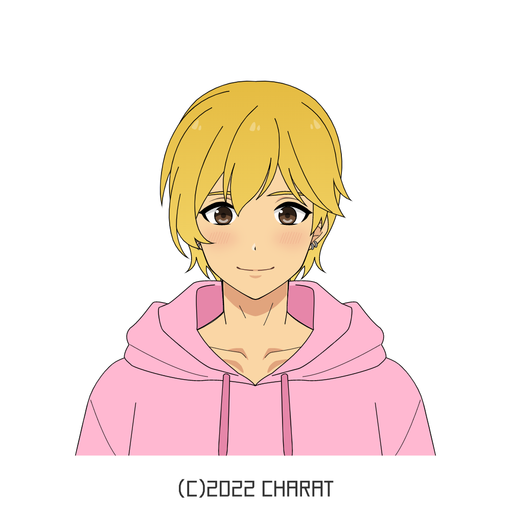

RYUUGAMINE KIYOSHI - 竜駕 輝義
HOBBIES
- Reading; When idle, he spends his time reading fanfiction or webtoons online, mostly the NSFW variety. His favorite genre is Boy's Love or MLM romance. He owns some BL manga volumes in English, including gifts from his boyfriend. His BL/yaoi doujin collection rest at home back in Japan, most of which feature a cute blonde uke. He's into stories that feature age gap pairings.
- Writing; Kiyoshi has developed a journaling habit: After waking up, he sits on the apartment's balcony and journals everything on his mind before starting the day. While it's not possible on the days he has an early shift, he tries to do it as often as possible. He also enjoys writing self-indulgent porn and indulging in his sexual fantasies. He has been writing NSFW content since middle school and his safe space is boyxboy/MLM romance stories.
- Sleeping
- Trying out new recipes; Kiyoshi uses holidays and events to make something new or improve his skills. Sometimes, he records himself cooking and uploads it on the internet, adding an explanation as if he were teaching others.
FRIENDS AND FAMILY
- Kiyoshi is in a romantic/sexual relationship with Kirishima Keima, his best friend. They have been dating since their 2nd year in middle school and their relationship has been rocky. Keima agreed to follow Kiyoshi to an overseas college, leaving Japan. They oppose each other in many ways which makes them clash often. They do because of their long friendship and trust; they feel safe sharing their emotions with each other, even the small ones. Thus, there are a lot of moments with heightened emotions that eventually get resolved. They know each other deeply and learned to establish boundaries and limits to what they shouldn't say, finding common ground to discuss constructively.
- Back in his first year, Kiyoshi roomed with a one year older transguy named Lian Yu. With Kiyoshi's accent, he began calling them 'Rian.' The language barrier was stressful but Lian made an effort to understand him, and Kiyoshi got used to the language, the instances he used Japanese phrases in their conversations lessened. Kiyoshi trusts him deeply, asking for advice and confiding in him. Lian was his support during a particularly tough time.
- Kiyoshi is also good friends with Lian's boyfriend, Theo Fanai. Kiyoshi knew him as his partner's roommate and they had spoken a few times, but they became much closer after bumping into each other at a mall. Theo helped Kiyoshi find some clothes that went according to his gender expression. While Theo was initially unaware of this, his aid meant a lot to Kiyoshi who was insecure and scared for liking the color pink and preferred cuter outfits.
- The girlfriend group is always active, cheerful, and intimate. Most of them are culinary arts majors and use some queer identities such as non-binary and lesbian. Relationships, gossip, and relationship gossip are common topics, a habit Kiyoshi was told was the norm between Hispanic girls. Kiyoshi grew to enjoy it, seeing it was treated as a bonding activity rather than having harmful intentions. He's closer with some more than others and he's always compassionate, understanding, and gentle.